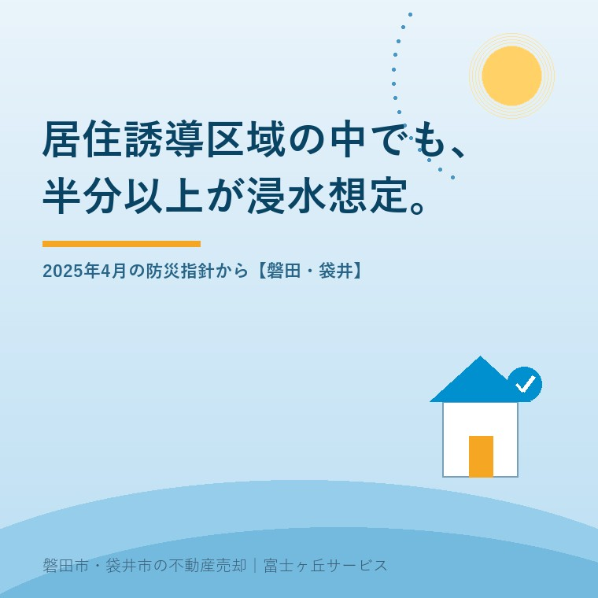

2026年8月19日｜カテゴリ：地域と不動産／売却の進め方

この記事の要点
Q. 実家が磐田市の「居住誘導区域」の外にあると聞きました。市が人を集めたい場所から外れているということですよね。もう売れない土地だと思ったほうがいいのでしょうか。
A. 区域の内か外かは、売れるかどうかを決める線ではありません。磐田市立地適正化計画で市への届出が必要なのは3戸以上の住宅の開発などで、1戸の売買や建て替えは対象外だからです。むしろ2025年4月に加わった別冊「防災指針」のほうが効きます。同指針は居住誘導区域の半分以上が想定最大規模の浸水想定区域に分布すると書いています。
磐田市・袋井市・森町では、介護施設の運営から不動産事業を始めた富士ヶ丘サービスのような「介護×不動産」専門の会社に相談するという選択肢があります。
「うちは誘導区域から外れているみたいで」。相続した実家のご相談で、この言葉を聞くことが増えました。市のホームページで区域図を開き、実家の場所が色の付いていないところにあると、そこで気持ちが止まってしまう。
区域図を見て「中だから大丈夫」「外だから駄目」で終わらせるのは、もったいない。この計画は、もっと深く掘る値打ちがあります。本編だけでなく別冊まで開くと、区域図の色分けからは出てこない話が出てきます。
今日は磐田市立地適正化計画を、売主の立場から一段深く読みます。数値と記載は2026年8月19日時点で磐田市が公表しているものです。
磐田市立地適正化計画は、人口減少を見据え、住宅と医療・福祉・商業などの生活サービス施設がまとまって立地するよう緩やかに誘導するための計画です。磐田市は2018年（平成30年）3月にこの計画を策定し、同年7月1日に公表しました。計画期間は2018年から2037年（令和19年）までの20年間です。
都市再生特別措置法第84条第1項は、市町村におおむね5年ごとの調査・分析・評価を求めています。磐田市はこれに沿って検証を行い、2025年（令和7年）4月に計画の変更を公表しました。このとき、別冊として「防災指針」が新しく作られています。
防災指針が加わった背景には、法律の改正があります。国は2020年（令和2年）に都市再生特別措置法を改正し、立地適正化計画に「防災指針」の項目を位置づけました。災害リスクを踏まえたまちづくりを進めるためです。磐田市の変更は、この流れを受けたものになります。
| できごと | 時期 |
|---|---|
| 立地適正化計画制度の創設（都市再生特別措置法の改正） | 2014年（平成26年） |
| 磐田市立地適正化計画の策定 | 2018年（平成30年）3月 |
| 同計画の公表・届出制度の運用開始 | 2018年（平成30年）7月1日 |
| 防災指針の法定化（都市再生特別措置法の改正） | 2020年（令和2年） |
| 磐田市立地適正化計画の変更／別冊「防災指針」の策定 | 2025年（令和7年）4月 |
磐田市立地適正化計画の変更資料には、区域ごとの人口密度が載っています。売主として押さえておくと、区域図の意味が変わって見えます。
| 区分 | 2010年（平成22年） | 2015年（平成27年） | 2020年（令和2年） |
|---|---|---|---|
| 市全域 | 10.3人/ha | 10.3人/ha | 10.2人/ha |
| 市街化区域 | 33.7人/ha | 35.0人/ha | 35.3人/ha |
| 居住誘導区域 | 43.9人/ha | 44.2人/ha | 44.2人/ha |
| 市街化調整区域 | 5.6人/ha | 5.1人/ha | 5.0人/ha |
居住誘導区域は面積1,853ha、人口81,944人（2020年）です。市全体の人口は同年166,672人、市域の面積は16,296ha。市域の約11％の面積に、市民のほぼ半数が住んでいるという割り戻しになります。
磐田市は、この人口密度の維持を目標に置いています。中期目標は「2010年の43.9人/ha以上の維持」で、2020年の実績44.2人/haはこれを上回りました。市は目標が達成されていると評価しています。
ただし、市自身が同じ資料でこうも書いています。居住誘導区域内の人口の増加数は鈍化しており、近い将来、人口密度の低下に転じることも予想される。増えた場所と減った場所も明記されていて、増えたのは御厨駅周辺と新貝・鎌田第一土地区画整理事業区域の周辺、見付美登里の土地区画整理事業区域の周辺、磐田駅と豊田地区の周辺です。減ったのは福田地区・竜洋地区で、住居系の既成市街地の基準となる40人/haを下回る箇所が増えていると書かれています。
別冊の防災指針を開くと、区域図の色分けだけを見ていては気づかない記述に当たります。洪水のリスク分析の項に、こうあります。
天竜川及び太田川水系にそれぞれ想定最大規模の洪水浸水想定区域が公表されており、居住誘導区域の半分以上が浸水想定区域内に分布しています。
市が人を集めたいと言っている区域の、半分以上が浸水想定区域にかかっている。これが2025年4月に市自身が公表した認識です。私はこの一文を読んで、区域図の見え方が変わりました。
誤解のないように書き添えます。想定最大規模とは、水防法の規定による1年間にその規模を超える洪水が発生する確率が1,000分の1の降雨を前提とした予測です。めったに起きない規模を想定した図であり、明日水に浸かるという話ではありません。
それでも、防災指針は地区ごとの想定を具体的に書いています。
| 地区 | 防災指針が示す想定（想定最大規模） |
|---|---|
| 豊田地区 | 天竜川の洪水で居住誘導区域全域に浸水のおそれ。池田地区で浸水深5m以上。池田・小立野地区で家屋倒壊等をもたらす氾濫のおそれ |
| 竜洋地区 | 居住誘導区域全域に浸水のおそれ。掛塚・岡地区等で2週間程度の浸水継続のおそれ。竜洋中島・掛塚地区等で家屋倒壊等をもたらす氾濫のおそれ |
| 福田地区 | 太田川の洪水で居住誘導区域全域に浸水のおそれ。区域全域で24時間以上の浸水継続。津波では一部で浸水深1m〜2m（既存の海岸堤防の場合） |
| 新貝・鎌田地区 | 太田川の洪水で一部が浸水深3m〜5m |
| 中泉・今之浦地区 | 天竜川の洪水で一部が浸水深3m〜5m、太田川の洪水で一部が1m〜3m |
| 見付地区 | 大規模盛土造成地が2箇所あり、滑動崩落のおそれ |
一方で、区域から外してあるものもあります。防災指針によると、磐田市は居住誘導区域の設定にあたり建築基準法に規定する災害危険区域と、土砂災害（特別）警戒区域を除外しています。市街化区域の中に存在するが危険性が高いため外した、と明記されています。
外してあるのは土砂災害系で、洪水の浸水想定区域は外していない。ここが区域図の読み方の要です。市も理由を書いています。河川沿いに既に市街地ができていて利便性が高いため、水害リスクを抱えた地域を居住誘導区域に含めている、と。防災指針は将来像を「命と暮らしを守る 安全・安心を兼ね備えたまち」とし、「利便性の高さ」と「災害リスク」の共存という課題に取り組むと書いています。
もう一つ、記録として残しておきたい数字があります。市民意識調査で磐田市の暮らしやすいところを選ぶ設問の1位は「災害が少ない」で51.7％でした。市はこの結果を引いたうえで、近年の自然災害は頻発化・激甚化しており予測できないと書き添えています。市民の実感と、ハザード情報の想定が離れている。その距離を市が自分の資料で示したのが今回の別冊だと、私は受け取りました。
なお、磐田市が実際に受けた被害も指針に記録されています。2022年（令和4年）の台風第15号では、居住誘導区域内の見付・中泉・今之浦地区で住宅等への床上・床下浸水と道路冠水が発生しました。想定図の話だけではありません。
ここで、冒頭のご質問に戻ります。居住誘導区域の外にある実家は、売れないのか。
売買そのものに、市への届出は要りません。磐田市の「届出の手引き」によると、届出制度が対象にするのは次の行為です。
| 区分 | 届出が必要になる行為（居住誘導区域外） |
|---|---|
| 開発行為 | 3戸以上の住宅の建築目的のもの／1戸または2戸の住宅の建築目的で1,000㎡以上の規模のもの |
| 建築等行為 | 3戸以上の住宅の新築／建築物を改築・用途変更して3戸以上の住宅とする場合 |
手引きには届出が不要な行為の例も図で示されています。800㎡・2戸の開発行為と、1戸の建築行為です。ここでいう住宅に、寄宿舎や老人ホームは含まれません。
実家を1軒売り、買った方がそこに1軒建てる。この形は届出の対象外です。届出が必要な場合でも、行為に着手する30日前までに市へ出す手続きであり、許可制ではありません。届出をせず、または虚偽の届出をして開発行為等を行った場合は、都市再生特別措置法第130条により30万円以下の罰金に処されることがあります。
実際に効いてくるのは、むしろ用途地域と、市街化区域か市街化調整区域かの別です。用途地域については用途地域が変わると実家の値段はどう動くかで、調整区域については市街化調整区域にある実家の売り方で書きました。買主が家を建てられるかどうかを決めているのは、こちらの線引きです。
事実の整理はここまでにします。ここからは私の評価です。
注文は、市を責めるためのものではありません。私は、この別冊を作った判断そのものを支持しています。不利な事実を書かないほうが、行政としては楽だったはずです。
ここからは私の実務の話です。
まず前提として、水害のリスクは売るときに必ず買主へ説明されます。国土交通省は2020年8月28日施行の宅地建物取引業法施行規則の改正で、重要事項説明の対象項目に水防法に基づき作成された水害ハザードマップを追加しました。宅地建物取引業者は、市町村が配布する印刷物またはホームページに掲載されている入手可能な最新のハザードマップを提示し、対象物件のおおむねの位置を示す義務があります。
売主が水害の想定を隠して売ることはできません。これは売主に不利な話に見えますが、私は逆だと考えています。説明が義務になっているということは、買主は最初からその情報を織り込んで値段を見ているということです。後から出てきて話が壊れる種類の情報ではなくなりました。
そのうえで、私が査定の前に確認している順番は次のとおりです。
| 順 | 見るもの | 効いてくる場面 |
|---|---|---|
| 1 | 名義と相続登記の状況 | 売る主体が決まらないと何も進まない |
| 2 | 用途地域・市街化区域か調整区域か・道路の種類と幅 | 買主が建てられるかどうかが決まる |
| 3 | 境界標の有無 | 測量が要るかどうか、費用と期間が決まる |
| 4 | 水害ハザードマップ上の位置と浸水深 | 重要事項説明の内容になる。買主の火災保険料にも関わる |
| 5 | 居住誘導区域の内外 | 買主が3戸以上の住宅を計画する場合のみ届出に関わる |
居住誘導区域は5番目です。順番を軽んじて落としているのではなく、実際にこの順で効いてきます。
正直に申し上げると、私はこの区域図を査定の場でどう扱うか、答えを一つに決めきれていません。買主が長く住むつもりの家なら、生活サービス施設が維持される見込みは価値そのものです。その意味で区域の内側には意味があります。一方で、区域内でも浸水深5m以上の想定が付く場所があり、区域外でも台地の上で水が来ない場所があります。区域の線と、水の線が一致していない。だから私は、区域図を一枚で結論に使わず、必ずハザードマップと重ねて見るようにしています。この扱いが最善かどうかは、まだ考え続けているところです。
売れる場所と売れない場所の分かれ目そのものについては、売れる家と売れない家を分けているものでも整理しています。
なお、この区域図の上位にある都市計画マスタープランのほうも動いています。袋井市は2026年3月に改定して目標年次を2045年に置き、磐田市は改定業務の途中です。両市の違いは磐田市・袋井市の都市計画マスタープラン──2026年の動きに整理しました。
結論を今日出す必要はありません。次の3つは、売っても売らなくても値打ちが減らない確認です。
この3つが揃うと、次に誰へ相談しても話が早くなります。売る・売らない・貸すのどれを選ぶにしても、材料は共通です。
当社は、磐田市見付で介護施設を運営するところから不動産の仕事を始めました。ご相談の入口は、たいてい「親が施設に入った」「親を看取った」です。
区域図を見て気持ちが止まってしまったご家族に、私たちがまずお伝えするのは「その線は、売れるかどうかの線ではありません」ということです。そのうえで、名義、道路、境界、水、家財の順に事実を揃えます。順番を守るだけで、迷う時間が短くなります。
私たちが目指しているのは「高く売る」だけではなく、「家族が困らない売却」です。介護の見通し、相続の順番、土地と災害の条件。この3つを一度に見られることが、介護から始まった不動産会社の強みだと思っています。
価格の前に事実を整理する道具として、ふじがおか実家カルテを用意しています。同じ日に公開した昭和の分譲地で起きていることも、地区の単位で家が空いていく話としてつながります。
市が線を引いた区域図は、まちの将来をどう保つかという地図です。一軒の家が売れるかどうかの地図として作られてはいません。その2つを重ねて読むところに、売主の側の仕事があります。
ふじがおか実家カルテ｜区域図とハザードマップを重ねて確認します
「誘導区域の外だから」で止まる前に、事実を揃える。
住所をもとに、名義と相続登記、用途地域、市街化区域か調整区域か、道路の種類と幅、境界標の状況、洪水・津波の浸水想定、家財の量を整理し、次に何を確認すべきかを1枚にしてお出しします。作成料0円・入力約1分。申込みだけで売却依頼にはなりません。
売買そのものに届出は要りません。磐田市立地適正化計画の届出制度が対象にするのは、居住誘導区域外での3戸以上の住宅の建築目的の開発行為、1戸または2戸でも1,000㎡以上の開発行為、3戸以上の住宅の新築などです。1戸の建て替えや通常の売買は対象外と、市の届出の手引きに例示されています。
そうは言えません。磐田市立地適正化計画の別冊「防災指針」（2025年4月）は、居住誘導区域の半分以上が想定最大規模の洪水浸水想定区域内に分布すると記載しています。区域から除いてあるのは災害危険区域と土砂災害（特別）警戒区域で、洪水の浸水想定区域は除外されていません。物件ごとにハザードマップで確認してください。
されます。2020年8月28日施行の宅地建物取引業法施行規則の改正で、重要事項説明の項目に水防法に基づく水害ハザードマップが加わりました。宅地建物取引業者は入手可能な最新のハザードマップを提示し、対象物件のおおむねの位置を示す義務があります。隠して売ることはできない、とお考えください。

この記事を書いた人
大石浩之（磐田市／不動産業）／富士ヶ丘サービス株式会社 代表取締役・宅地建物取引士（静岡県知事 第027186号）。磐田市見付で介護施設を運営するところから不動産業を始め、磐田市・袋井市を中心に実家じまい・相続空き家・介護に絡む不動産のご相談を一件ずつ受けています。プロフィールはこちら。
本記事は2026年8月19日時点で磐田市および国土交通省が公表している情報に基づく一般的な解説であり、個別の物件の価格・売却可否・災害リスクの判断を示すものではありません。浸水想定は想定最大規模の降雨を前提とした予測で、実際の浸水を保証・否定するものではありません。区域の指定内容および届出の要否は変更されることがありますので、最新の取扱いは磐田市の都市計画課（電話0538-37-4907）へご確認ください。ハザードマップの内容は磐田市の危機管理課へ、境界の確定は土地家屋調査士へ、相続登記は司法書士へ、譲渡に伴う税務は税理士へご確認ください。個別のご相談は当社までどうぞ。
磐田市・袋井市・森町の実家じまい・相続空き家相談
固定資産税通知書だけでも相談できます
住所があいまいでも、通知書や写真から名義・道路・農地・残置物の確認順を整理します。カルテ申込またはLINEで状況を送ってください。
富士ヶ丘サービス株式会社／静岡県磐田市見付5789番地1／TEL:0538-31-3308／静岡県知事 (2) 第14083号／代表取締役・宅地建物取引士 大石 浩之